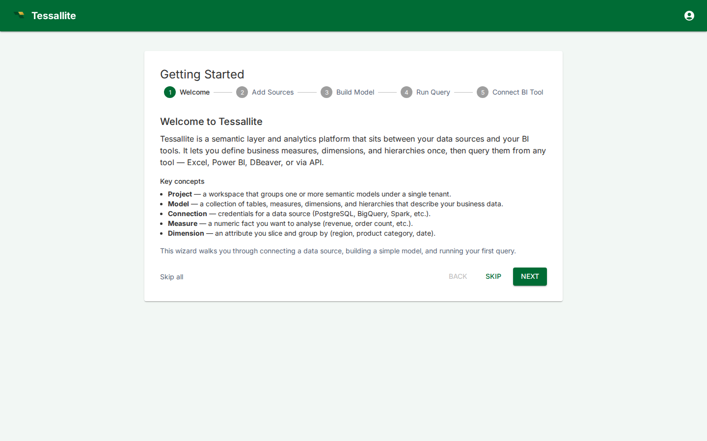

Welcome Wizard
What this covers

The welcome wizard is a guided first-time setup flow that walks new users through the core steps of using Tessallite: connecting a data source, building a model, running a query, and connecting a BI tool. This article explains what each step covers, when to skip, and how to relaunch the wizard later.
When it appears
The wizard appears automatically the first time a user logs in. After completing or skipping it, it does not appear again on login. You can relaunch it at any time from the user menu.
The five steps
1. Welcome
An overview of Tessallite's core concepts: projects, models, connections, measures, and dimensions. Provides context for the steps that follow.
2. Add Sources
Guidance on adding data source connections to a project. Covers where to find the connection dialog, what credentials are needed, and how to verify the connection.
3. Build Model
Guidance on creating a semantic model: adding tables, defining measures and dimensions, setting up joins. Introduces the Model Builder canvas.
4. Run Query
Guidance on running a query using the Measure Query Panel or by connecting a BI tool. Explains how to verify that the model returns correct results.
5. Connect BI Tool
Guidance on connecting external BI tools (Excel, Power BI, DBeaver, Tableau) to Tessallite via JDBC or XMLA. Shows the connection strings for the current environment.
Skipping steps
Each step has a Skip button that advances to the next step without performing any action. There is also a Skip All link that completes the wizard immediately.
When it is OK to skip:
- Experienced users who already understand the platform and want to get started immediately.
- Users who have already set up their environment and just need to clear the first-login prompt.
When skipping may cause confusion:
- First-time users who skip and then don't know where to find the data source dialog or model builder. The wizard provides context for navigating the platform — skipping loses that context.
Relaunching the wizard
To relaunch the wizard after it has been completed:
- Click the user icon in the top-right corner of the app bar.
- Select Welcome Tour from the dropdown menu.
- The wizard opens. Navigate through the steps again as needed.
Relaunching does not reset your onboarding status — it simply shows the wizard again for reference.